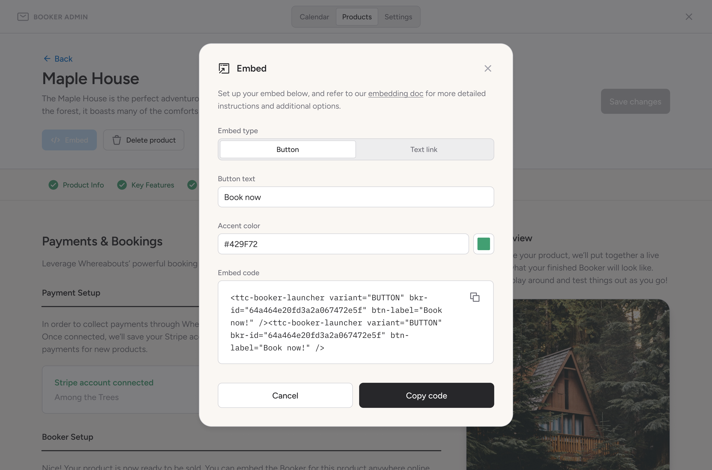

Booker
Booker is a light-weight, low-fee booking engine that we’ve built directly into our larger app for tourism destinations, Whereabouts. Booker’s focus is to provide small, independent tourism businesses — many of which have limited to no digital presence — with an e-commerce solution that’s designed precisely for their unique needs while being easy to embed anywhere on the web.
Many of the businesses we support are reticent to adopt modern tech tools — and for good reason. Big corporate aggregators like Airbnb and Booking.com take huge cuts of their profits, and smaller platforms more tailored to tourism products are often bogged down by endless complexity. Through a handful of iterations over the last two years, informed by various rounds of beta testing and many conversations with small businesses, we’ve honed the product to a point where we feel it delivers a delightful, simple experience while being modular enough to support long-term growth.
Booker is made up of two parts: one is the consumer-facing embed through which reservations are made (as shown in the video above), and the other is the admin app for businesses through which they manage their calendar and bookings, configure their settings, and create sellable products (for now, we support the creation of accommodation, event-based, and fee-based products). For this case study, I’ll focus on product creation user flow.
Every sellable product that a business creates gets its own embeddable Booker instance. This is what makes our model unique: instead of driving traffic to a single source such as their website, businesses can embed their products anywhere they choose and even share their embeds with third-party partners to broaden their reach. And in the interest of simplicity, the data model we’ve created for these sellable products allows a business owner to create one and start capturing bookings within minutes.

In the Products tab, business owners can see an overview of all their sellable products. From here, they can also create new ones. The screens below showcase parts of the flow a user would follow to create an accommodation product. The user flow is broken down into clear steps, and at each one, the user can see a live preview of their Booker being rendered on the right-hand side.

As shown in the modals below, users can easily create bedrooms with specific attributes, custom pricing tiers, and simple upsell opportunities.
Rich content like photos and videos can easily be uploaded to better showcase the product.

We've also built a Stripe integration, allowing users to easily create (or connect) a Stripe account without having to abandon the product creation flow.
Lastly, once all the steps in the flow have been completed, an embed code can be generated and customized.
Tourism business owners love to give their customers amazing experiences; what they don't love is having to invest an inordinate amount of time in admin work. With Booker, our goal is to help these folks thrive in a crowded market while saving them time through simple, easy-to-use solutions.
Compass
Compass is audio sampling software that I wrote for an open-source sound computer called norns. The app itself was written in Lua, but the fun really started when it came time to coding and designing a multi-page interface using only a 128x64 pixel display, 3 buttons, and 3 encoders.

Compass, at its core, is an audio looper, but with a twist: it's driven by a sequencer, and for each step in the sequence, you can select various commands that manipulate and mangle the incoming audio in all sorts of creative and unpredictable ways — speeding it up or slowing it down, reversing playback, jumping to different points in the audio stream, changing the speed of the sequencer itself...
Key for me was creating a user interface — using very limited inputs! — that would be intuitive, fast, and encourage happy accidents. One of the breakthroughs I had while developing the UI was settling on the idea to include basic documentation in the app itself, providing users with a mini-manual of sorts they have access to without ever having to stop making music.
Wistia Podcast Player
My last project at Wistia as product designer was to design a new audio player to support the company's shift into podcasting. Our goal was to ship a powerful, embeddeable audio player with rich podcasting features — all without sacrificing the simplicity and elegance of Wistia's much-admired video player. Below is a video I recorded detailing its features and functionality.
Many small, independent tourism businesses are often reticent to embrace new tech solutions — and with good reason. They’re bloated, complex, and end up taking time away from doing what they love most: actually running a tourism businesses on a day-to-day basis. Booker’s goal, besides being a powerful conversion engine, is to give these businesses time back in their day.